5.1 EDA 是什麼、為什麼要做做 EDA 時通常會問這些問題：
資料長什麼樣子？ 幾列幾欄、每欄的型別（dim()、str()）。每個變數的分布？ 集中在哪裡、分散程度、有沒有偏斜或極端值（summary()、直方圖、盒鬚圖）。資料品質？ 缺失值、錯誤值、代碼要不要轉成因子（is.na()、table()）。變數之間的關係？ 誰和誰相關、不同組別有沒有差異（散佈圖、相關係數、分組盒鬚圖）。
考古題出過 簡答題：EDA 的重要性 考古題：「Explain the importance of exploratory data analysis (EDA) in the context of business analytics.」本節 Concept Check 第一題有參考答案。
在商業分析裡，EDA 的價值是：在花時間建模之前，先確認資料可不可靠、找出值得追問的現象（哪些顧客貢獻最多營收、哪個通路表現異常），並決定接下來該用什麼模型、要不要轉換變數。跳過 EDA 直接建模，很可能在錯誤資料上得到看似漂亮、實際上錯誤的結論。
以 R 內建的 mtcars（1974 年 32 款車的資料）示範最基本的檢查：
## [1] 32 11## 'data.frame': 32 obs. of 5 variables:
## $ mpg : num 21 21 22.8 21.4 18.7 18.1 14.3 24.4 22.8 19.2 ...
## $ cyl : num 6 6 4 6 8 6 8 4 4 6 ...
## $ disp: num 160 160 108 258 360 ...
## $ hp : num 110 110 93 110 175 105 245 62 95 123 ...
## $ drat: num 3.9 3.9 3.85 3.08 3.15 2.76 3.21 3.69 3.92 3.92 ...複製 R summary ( mtcars [, c ( "mpg" , "hp" , "wt" )])
## mpg hp wt
## Min. :10.4 Min. : 52.0 Min. :1.51
## 1st Qu.:15.4 1st Qu.: 96.5 1st Qu.:2.58
## Median :19.2 Median :123.0 Median :3.33
## Mean :20.1 Mean :146.7 Mean :3.22
## 3rd Qu.:22.8 3rd Qu.:180.0 3rd Qu.:3.61
## Max. :33.9 Max. :335.0 Max. :5.42複製 R table ( mtcars $ cyl ) # cyl（汽缸數）只有 4、6、8：其實是類別
##
## 4 6 8
## 11 7 14複製 R cor ( mtcars $ mpg , mtcars $ wt ) # 車重與油耗的相關係數
## [1] -0.8677cor() 計算相關係數，介於 -1 和 1：接近 -1 是強烈負相關（車越重，每加侖跑的英里數越少）。
Concept Check：5.1 EDA 是什麼、為什麼要做 題目照期末考的題型自編（選擇、填空、簡答、寫程式），不是老師出的題目。選擇與填空用英文題幹，附中文題意。
Explain the importance of exploratory data analysis (EDA) in the context of business analytics.
隱藏解答 答案 EDA is the step of summarizing and visualizing data before formal modeling. It is important because:
Data quality : it reveals missing values, typos, outliers and wrong data types (for example, ID codes stored as numbers) that would otherwise distort the analysis.Understanding patterns : distributions, trends, group differences and correlations show what is happening in the business, such as which customers or products drive revenue.Guiding modeling : it helps choose variables, detect skewness that needs transformation, spot multicollinearity, and decide which model is appropriate.Generating questions and communicating : charts make findings easy to explain to managers and often raise new business questions.
中文重點：EDA 是建模前的「先看懂資料」，用來檢查資料品質（缺失、錯誤、極端值、型別）、發現模式與關係（分布、趨勢、組間差異、相關）、引導建模（選變數、是否轉換、共線性），並用圖表溝通結果、產生新的商業問題。
解析
考古題原題（5 分）。考試用英文作答，寫出 3～4 個重點並各舉一個例子就足夠。
The _
隱藏解答 答案 cor()
解析
考古題原題。cor(x, y) 算兩個變數；cor(資料框) 算所有數值欄兩兩之間的相關矩陣。要檢定相關是否顯著用 cor.test()。
You receive a new customer dataset. Which step should come first in an EDA?
(A) Fit a regression model with all variables included (B) Check its dimensions, data types and missing values (C) Remove all rows whose sales are above the mean (D) Report the p-values of all pairwise correlations 隱藏解答 答案 (B) Check its dimensions, data types and missing values
解析
先用 dim()、str()、summary()、colSums(is.na()) 了解資料大小、型別與缺失，才知道後面的分析能不能做、要怎麼做。直接建模或刪資料都太早。
5.2 依變數個數與型別選圖選什麼圖，取決於要看幾個變數 、它們是類別 還是連續 ：
情境
變數型別
圖
base R
ggplot2
單變數
類別
長條圖、圓餅圖
barplot(table(x))、pie()geom_bar()
單變數
連續
直方圖、密度圖、盒鬚圖
hist()、plot(density())、boxplot()geom_histogram()、geom_density()
雙變數
連續 vs 連續
散佈圖
plot(x, y)geom_point()
雙變數
連續 vs 類別
分組盒鬚圖
boxplot(y ~ g)geom_boxplot()
雙變數
類別 vs 類別
馬賽克圖、堆疊長條
mosaicplot(table(a, b))geom_bar(position = "fill")
多變數
多個連續
散佈圖矩陣、相關圖、熱圖
plot(df)、corrplot()、heatmap()用顏色、形狀、分面加入第三個變數
R 內建繪圖（base R）
base R 的繪圖函數一行就能畫，適合快速探索。用內建的 iris（三種鳶尾花，各 50 朵，量了花萼與花瓣的長寬）示範：
複製 R par ( mfrow = c ( 1 , 2 )) # 把畫面切成 1 列 2 欄，兩張圖並排
pie ( table ( iris $ Species ), main = "pie" )
barplot ( table ( iris $ Species ), main = "barplot" )
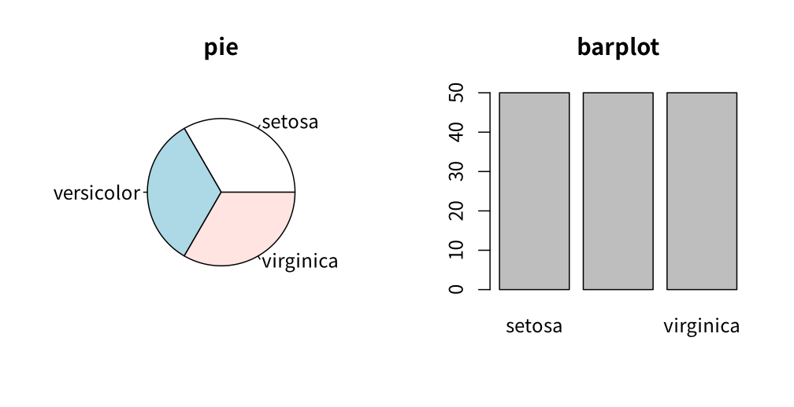
table(iris$Species) 先數出每個品種有幾筆，再交給 pie() 或 barplot()。par(mfrow = c(列, 欄)) 設定一張畫布要放幾張圖；之後要記得改回 par(mfrow = c(1, 1))。
複製 R par ( mfrow = c ( 1 , 2 ))
hist ( iris $ Sepal.Length , main = "hist" , xlab = "Sepal.Length" )
boxplot ( Sepal.Length ~ Species , data = iris , main = "boxplot" )
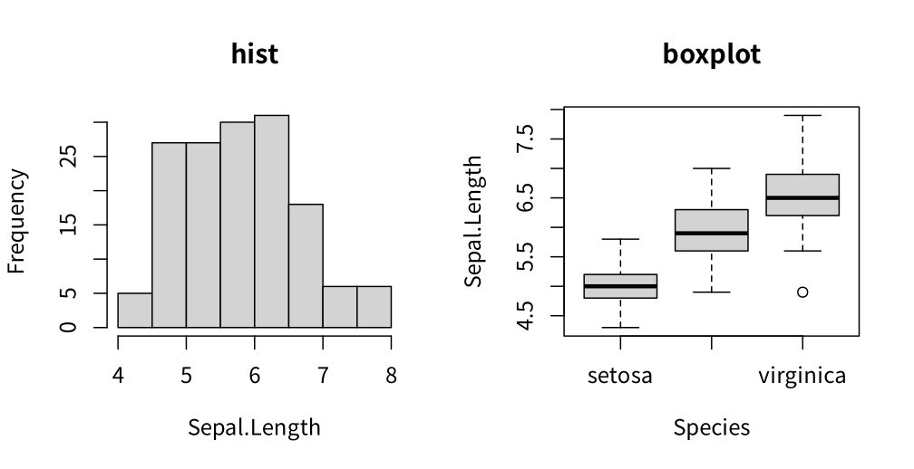
boxplot(y ~ g) 的 ~ 是 R 的公式 （formula）寫法，讀作「y 依 g 分組」。第 6 章的迴歸 lm(y ~ x) 也用同樣的寫法。
怎麼讀盒鬚圖
盒鬚圖一次呈現五個數字：盒子下緣是第一四分位數 Q1、中間粗線是中位數、上緣是 Q3；盒子高度是四分位距 IQR = Q3 − Q1。兩端的鬚延伸到 1.5 倍 IQR 以內最遠的點，超出範圍的點單獨畫出，是可能的離群值 。從上圖看得出 virginica 的花萼最長、setosa 最短，三組分布幾乎不重疊。
散佈圖矩陣與分組平均
複製 R plot ( iris [, 1 : 4 ], col = iris $ Species ) # 四個數值變數兩兩散佈圖，依品種上色
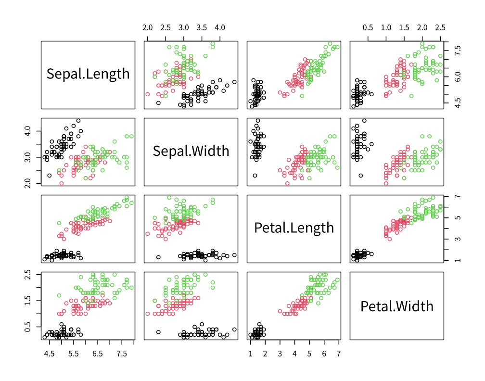
複製 R length.means <- tapply ( iris $ Sepal.Length , iris $ Species , mean ) # 各品種平均
barplot ( length.means , xlab = "Species" , ylab = "Mean of Sepal.Length" )
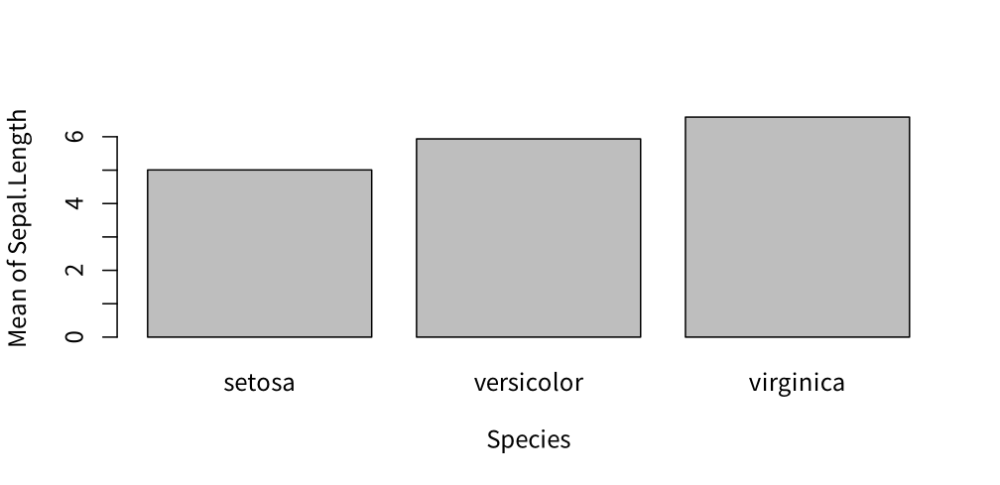
Concept Check：5.2 依變數個數與型別選圖 題目照期末考的題型自編（選擇、填空、簡答、寫程式），不是老師出的題目。選擇與填空用英文題幹，附中文題意。
Which plot is most appropriate for comparing the distribution of a continuous variable across several categories ?
(A) Pie chart of the groups (B) Scatter plot of the values (C) Side-by-side boxplot (D) Mosaic plot of the table 隱藏解答 中文題意
比較一個連續變數在不同類別間的分布，最適合用哪種圖？
答案 (C) Side-by-side boxplot
解析
分組盒鬚圖可以同時比較各組的中位數、離散程度與離群值。圓餅圖是單一類別變數；散佈圖是兩個連續變數；馬賽克圖是兩個類別變數。
What does boxplot(Sepal.Length ~ Species, data = iris) draw?
(A) One boxplot of Species for each value of Sepal.Length (B) A single boxplot of all Sepal.Length values combined (C) A scatter plot of Sepal.Length against Species (D) One boxplot of Sepal.Length for each level of Species 隱藏解答 答案 (D) One boxplot of Sepal.Length for each level of Species
解析
y ~ g 讀作「y 依 g 分組」，左邊是要畫分布的數值，右邊是分組變數，所以每個品種各一個 Sepal.Length 的盒鬚圖。
What information does a boxplot show? How are potential outliers identified?
隱藏解答 答案 盒子的下緣、中線、上緣分別是第一四分位數 Q1、中位數、第三四分位數 Q3，盒子高度是四分位距 IQR = Q3 − Q1，表示中間 50% 資料的分散程度；鬚延伸到 Q1 − 1.5×IQR 與 Q3 + 1.5×IQR 範圍內最遠的資料點。超出這個範圍的點會單獨畫出，視為可能的離群值。並排多個盒鬚圖就能比較各組的中心位置、分散程度與偏態。
解析
盒鬚圖看不出分布是否有兩個高峰（雙峰），這時要搭配直方圖或密度圖。
5.3 ggplot2 繪圖文法ggplot2 把一張圖拆成幾個組成元素，用 + 一層一層疊上去：
資料 ：ggplot(data, ...)美學對應 （aesthetic mapping）aes()：哪個變數對應到 x 軸、y 軸、顏色、形狀、大小……幾何物件 （geom）：用點、線、長條、盒子……來呈現其他圖層：標題與軸標籤 labs()、分面 facet_wrap()、主題 theme_xxx()、座標軸設定 scale_xxx()
複製 R ggplot ( data , aes ( x = 變數1 , y = 變數2 )) +
geom_point () + # 散佈圖
labs ( title = "標題" , x = "x 軸名稱" , y = "y 軸名稱" ) +
theme_minimal ()
常用的 geom：geom_point() 散佈圖、geom_line() 折線圖、geom_histogram() 直方圖、geom_density() 密度圖、geom_boxplot() 盒鬚圖、geom_bar()／geom_col() 長條圖、geom_smooth() 配適線、geom_text() 文字標籤。
散佈圖：把第三個變數放進顏色和形狀
複製 R iris %>%
ggplot ( aes ( x = Sepal.Length , y = Sepal.Width ,
color = Species , shape = Species )) +
geom_point ( size = 2 )
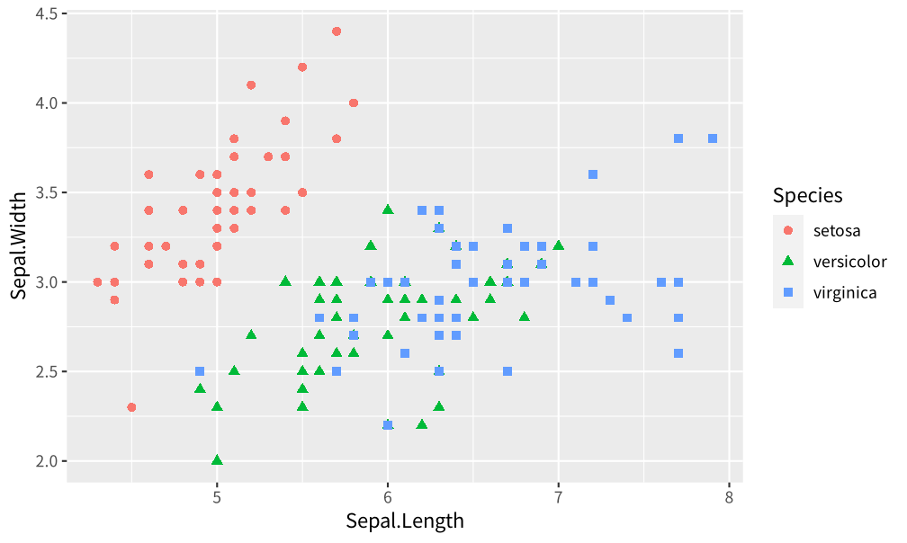
aes(x = ..., y = ...)：把兩個變數對應到兩個軸。color = Species, shape = Species：再把品種對應到顏色與形狀，ggplot 自動配色並畫圖例。size = 2 寫在 aes() 外面 ：所有點都固定大小 2，不對應任何變數。
重點 aes() 裡面和外面的差別 aes() 裡面放「變數」：值會隨資料改變，並產生圖例。aes() 外面放「固定值」：所有點都一樣。寫成 geom_point(aes(color = "blue")) 是常見錯誤——R 會把 "blue" 當成一個只有一個值的變數，點會變成預設的紅色，還多一個寫著 blue 的圖例。要全部變藍應該寫 geom_point(color = "blue")。
直方圖與密度圖
複製 R ggplot ( iris , aes ( x = Sepal.Length , fill = Species )) +
geom_histogram ( bins = 15 , color = "white" , alpha = 0.7 , position = "identity" )
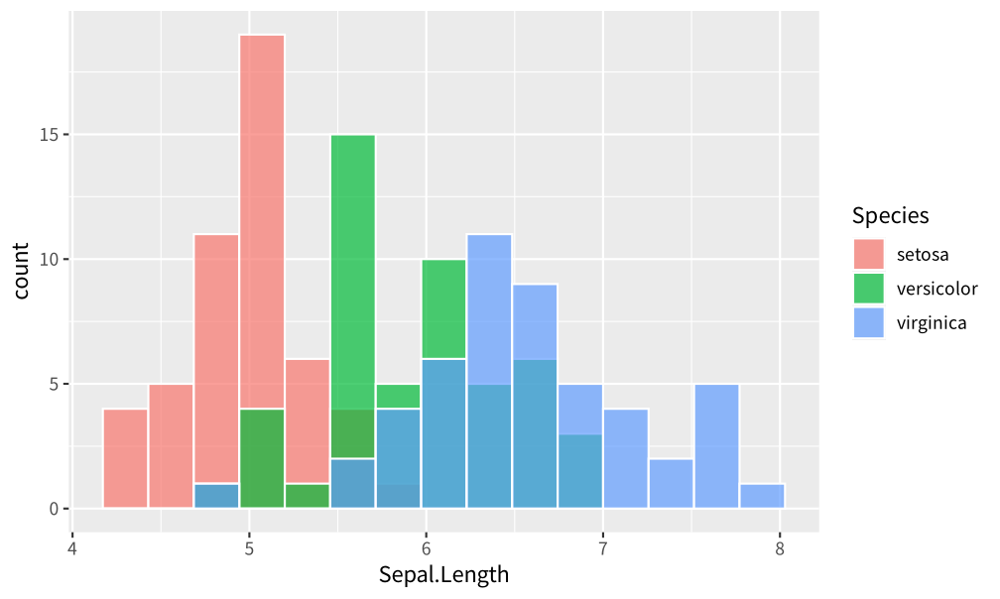
bins = 15：切成 15 個區間。fill 是長條內部顏色，color 是邊框顏色（這裡固定白色）。alpha 是透明度（0 透明～1 不透明）；position = "identity" 讓三組直接重疊，而不是預設的往上堆疊。
複製 R ggplot ( iris , aes ( x = Petal.Length , fill = Species )) +
geom_density ( alpha = 0.5 )
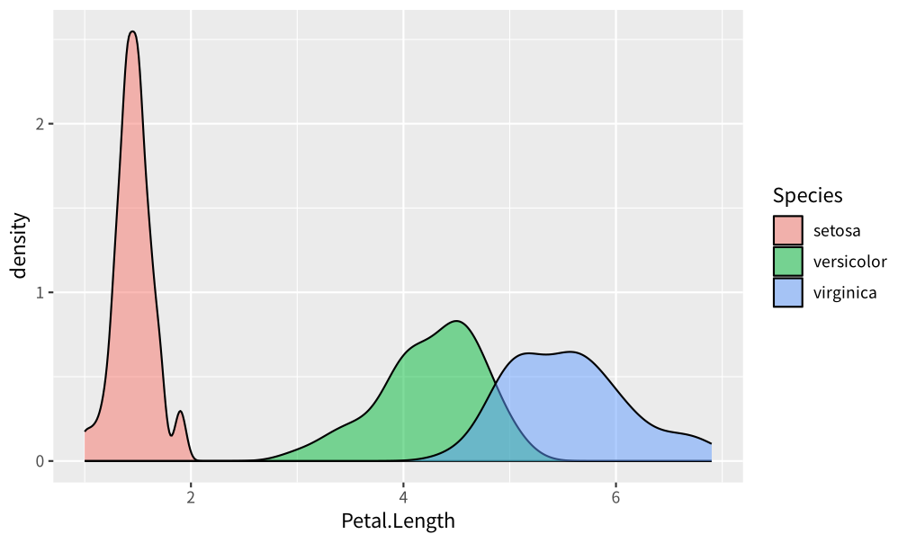
密度圖是平滑版的直方圖，重疊比較多組時更清楚。
散佈圖加上迴歸線
複製 R ggplot ( mtcars , aes ( x = wt , y = mpg )) +
geom_point () +
geom_smooth ( method = "lm" ) +
labs ( title = "Weight vs. fuel efficiency" ,
x = "Weight (1000 lbs)" , y = "Miles per gallon" )
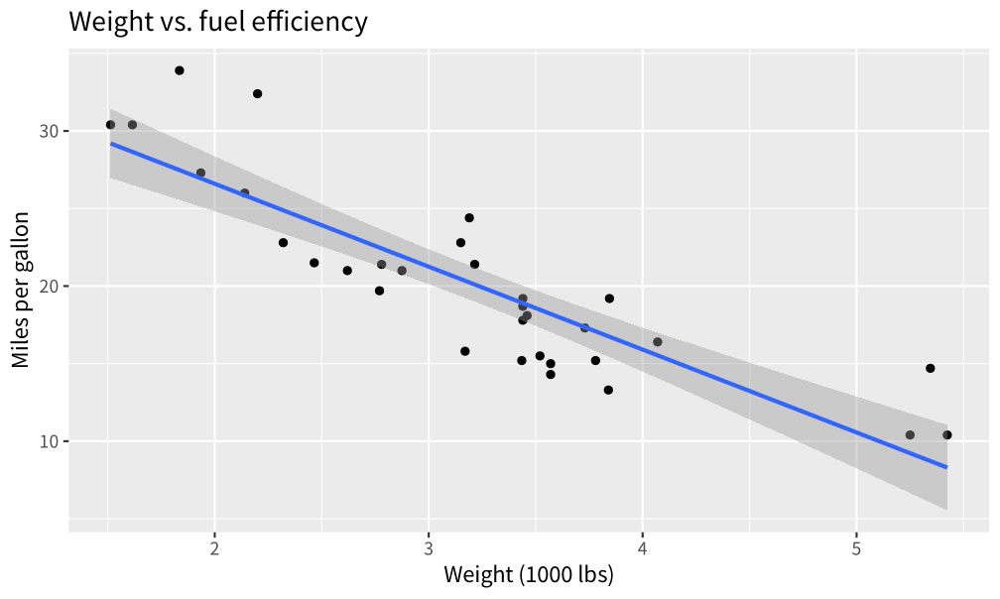
geom_smooth(method = "lm") 畫出最小平方迴歸直線，灰色帶是 95% 信賴區間（第 6 章詳細說明）。
折線圖、並排長條圖與圖例文字
時間資料常用 geom_line() 畫折線圖，依類別上色就會每一類一條線：
複製 R sales <- data.frame (
day = rep ( as.Date ( "2025-01-01" ) + 0 : 9 , times = 2 ), # 10 天、兩家店
store = rep ( c ( "A" , "B" ), each = 10 ),
sales = c ( 12 , 15 , 14 , 18 , 20 , 17 , 21 , 23 , 22 , 25 ,
10 , 11 , 13 , 12 , 14 , 16 , 15 , 17 , 18 , 17 )
)
ggplot ( sales , aes ( x = day , y = sales , color = store )) +
geom_line () +
scale_color_discrete ( labels = c ( "Store A" , "Store B" )) +
labs ( title = "Daily sales" , x = "Date" , y = "Sales" , color = "Store" )
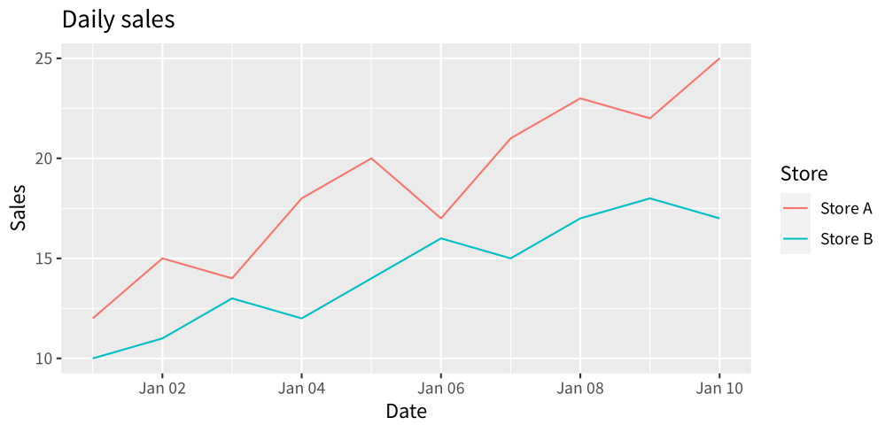
x 是日期型別（第 1 章 as.Date()）時，ggplot 會自動用時間刻度。
color = store 讓兩家店各畫一條線、自動配色並產生圖例。scale_color_discrete(labels = ...) 只改圖例上顯示的文字 ，順序要和類別的排序（這裡是 A、B）一致；資料本身不變。labs() 一次設定標題、x 軸、y 軸名稱，color = 改圖例標題。
長條圖要比較「每個類別裡的幾個組」時，預設會把各組往上堆疊；加 position = "dodge" 改成並排：
複製 R sales_type <- data.frame ( item = rep ( c ( "Coffee" , "Tea" , "Cake" ), each = 2 ),
store = rep ( c ( "A" , "B" ), times = 3 ),
total = c ( 120 , 90 , 60 , 75 , 40 , 55 ))
ggplot ( sales_type , aes ( x = item , y = total , fill = store )) +
geom_col ( position = "dodge" )
geom_col() 等於 geom_bar(stat = "identity")：長條高度直接用 y 的值。堆疊適合看總量與組成，並排適合直接比較各組的高低。
分面 facet
複製 R ggplot ( mtcars , aes ( x = wt , y = mpg )) +
geom_point () +
facet_wrap ( ~ cyl ) +
theme_bw ()
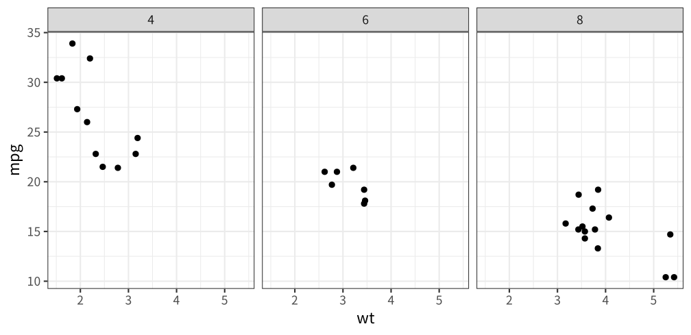
facet_wrap(~ cyl) 依汽缸數切成三個小圖，座標軸一致，方便比較。facet_grid(列變數 ~ 行變數) 則是用兩個變數排成格子。
相關圖 corrplot
複製 R library ( corrplot )
corr <- cor ( iris [, 1 : 4 ])
round ( corr , 2 )
## Sepal.Length Sepal.Width Petal.Length Petal.Width
## Sepal.Length 1.00 -0.12 0.87 0.82
## Sepal.Width -0.12 1.00 -0.43 -0.37
## Petal.Length 0.87 -0.43 1.00 0.96
## Petal.Width 0.82 -0.37 0.96 1.00複製 R corrplot ( corr , method = "circle" )
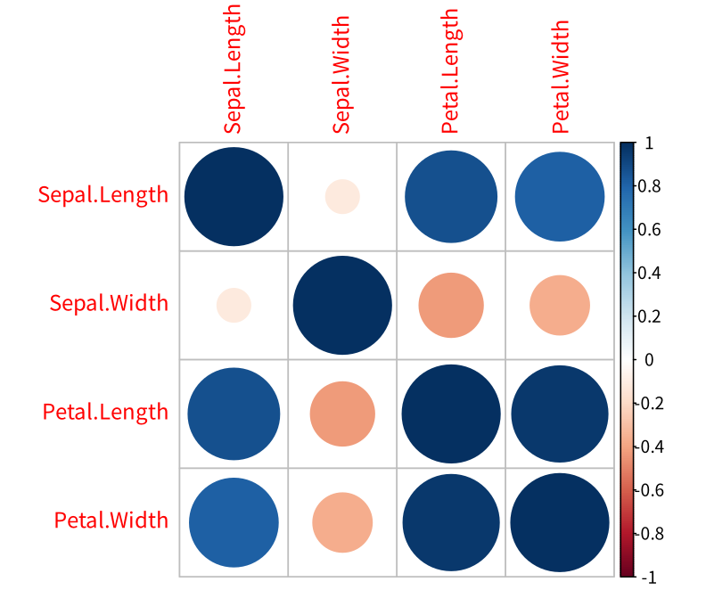
cor(iris[, 1:4])：只取四個數值欄算相關矩陣（第 5 欄 Species 是因子，不能算）。圓越大、顏色越深表示相關越強；藍色正相關、紅色負相關。花瓣長與花瓣寬相關高達 0.96，建模時同時放入會有共線性 問題（第 6 章）。
Concept Check：5.3 ggplot2 繪圖文法 題目照期末考的題型自編（選擇、填空、簡答、寫程式），不是老師出的題目。選擇與填空用英文題幹，附中文題意。
Which code makes all points blue?
(A) ggplot(df, aes(x, y)) + geom_point(color = "blue")(B) ggplot(df, aes(x, y)) + geom_point(aes(color = "blue"))(C) ggplot(df, aes(x, y, color = blue)) + geom_point()(D) ggplot(df, aes(x, y)) + geom_point(fill = blue)隱藏解答 答案 (A) ggplot(df, aes(x, y)) + geom_point(color = "blue")
解析
固定的顏色要寫在 aes() 外面。(B) 把 "blue" 當成變數值，點會是預設配色並多一個圖例；(C)(D) 的 blue 沒有引號，R 會去找叫 blue 的欄位或物件。
In ggplot2, which symbol is used to add layers such as geoms and labels to a plot?
(A) %>%(B) +(C) &(D) ~隱藏解答 答案 (B) +
解析
ggplot2 用 + 疊加圖層；%>% 是 dplyr 的管線。常見錯誤是在 ggplot 的圖層之間用了 %>%。~ 用在 facet 與公式。
To split a scatter plot into separate panels for each value of a categorical variable cyl, add + ________(~ cyl).
隱藏解答 中文題意
要依類別變數 cyl 把散佈圖切成多個小圖，要加上哪個函數？
答案 facet_wrap
解析
facet_wrap(~ cyl)；兩個變數排成格子用 facet_grid(a ~ b)。
Using mtcars, draw a scatter plot of hp (x) against mpg (y), color the points by the number of cylinders cyl treated as a category, and add a linear regression line for all cars.
隱藏解答 中文題意
畫 hp 對 mpg 的散佈圖，點依 cyl（當成類別）上色，並加上一條整體的迴歸直線。
答案 複製 R ggplot ( mtcars , aes ( x = hp , y = mpg )) +
geom_point ( aes ( color = factor ( cyl )), size = 2 ) +
geom_smooth ( method = "lm" , color = "black" ) +
labs ( color = "cyl" )
解析
factor(cyl) 讓 4、6、8 被當成三個類別，顏色才會是三個分開的顏色，不是連續漸層。把 color 寫在 geom_point() 的 aes 裡，只有點會分組；如果寫在 ggplot() 的 aes 裡，geom_smooth() 也會分組，畫出三條線。
5.4 標籤與文字位置：hjust 與 vjusthjust（horizontal justification）與 vjust（vertical justification）控制文字相對於它的位置點要怎麼對齊 ，值通常在 0 到 1 之間：
值
hjust（水平）
vjust（垂直）
0
文字的左緣 對齊位置點（文字往右長）
文字的底部 對齊位置點（文字往上長）
0.5
置中
置中
1
文字的右緣 對齊位置點（文字往左長）
文字的頂部 對齊位置點（文字往下長）
下圖每個紅點都是同一個位置點，看文字如何隨 hjust、vjust 移動：
複製 R just <- expand.grid ( hjust = c ( 0 , 0.5 , 1 ), vjust = c ( 0 , 0.5 , 1 ))
just $ label <- paste0 ( "h=" , just $ hjust , ", v=" , just $ vjust )
ggplot ( just , aes ( x = hjust , y = vjust )) +
geom_point ( color = "red" , size = 3 ) +
geom_text ( aes ( label = label , hjust = hjust , vjust = vjust ), size = 4 ) +
scale_x_continuous ( limits = c ( -0.4 , 1.4 )) +
scale_y_continuous ( limits = c ( -0.3 , 1.3 ))
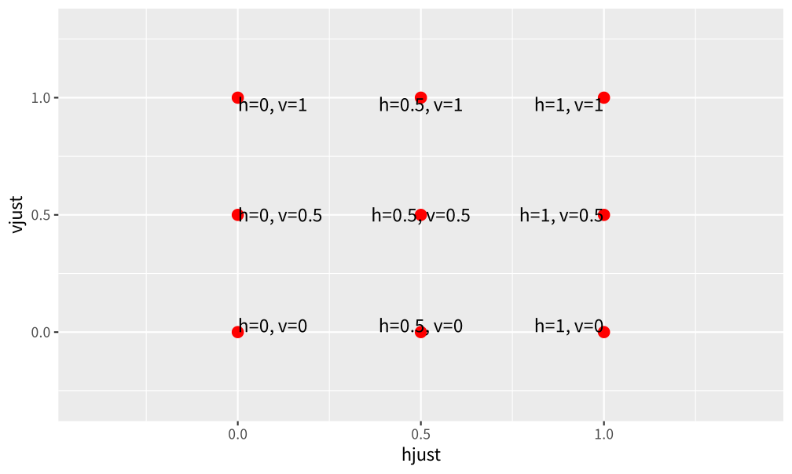
expand.grid() 產生兩個向量所有的組合（3 × 3 = 9 列）。這裡把 hjust、vjust 放在 aes() 裡，讓每個標籤用自己那一列的值；平常只要寫固定值，例如 geom_text(vjust = -0.5)。
超出 0～1 的值也可以：vjust = -0.5 讓文字更往上離開位置點（常用來把數字標在長條上方），vjust = 1.5 讓文字往下移到長條內部。
常見用法一：長條上方標數字
複製 R counts <- mtcars %>% count ( cyl )
ggplot ( counts , aes ( x = factor ( cyl ), y = n )) +
geom_col ( fill = "steelblue" ) +
geom_text ( aes ( label = n ), vjust = -0.5 ) + # 數字放在長條頂端上方
ylim ( 0 , 16 ) + labs ( x = "cyl" )
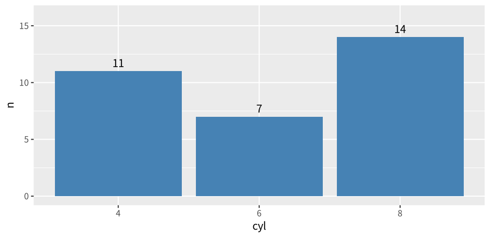
改成 vjust = 1.5, color = "white"，數字就會跑到長條內部頂端。
常見用法二：標題置中、軸標籤旋轉
複製 R ggplot ( mtcars , aes ( x = rownames ( mtcars ), y = mpg )) +
geom_col () +
labs ( title = "MPG of each car" , x = NULL ) +
theme ( plot.title = element_text ( hjust = 0.5 ), # 標題置中
axis.text.x = element_text ( angle = 90 , hjust = 1 , vjust = 0.5 , size = 6 ))
ggplot 的標題預設靠左（hjust = 0），hjust = 0.5 置中。
x 軸文字轉 90 度後，hjust = 1 讓文字的「結尾」對齊刻度（文字往下長，不會跑進圖裡）；vjust = 0.5 讓文字和刻度線置中對齊。旋轉之後，hjust／vjust 的方向也跟著文字轉了。
theme() 用來調整非資料的元素：element_text() 設定文字，element_blank() 把元素移除。 Concept Check：5.4 標籤與文字位置：hjust 與 vjust 題目照期末考的題型自編（選擇、填空、簡答、寫程式），不是老師出的題目。選擇與填空用英文題幹，附中文題意。
In geom_text(aes(label = n), vjust = -0.5) on top of a bar chart, where is each label placed?
(A) Slightly above the top of each bar (B) Inside the bar, just below its top edge (C) Centered vertically in the middle of the bar (D) To the left of the bar at the same height 隱藏解答 中文題意
vjust = -0.5 會把標籤放在哪裡？
答案 (A) Slightly above the top of each bar
解析
vjust = 0 時文字底部貼著位置點（長條頂端）；負值讓文字再往上移，所以在長條上方。vjust 大於 1（例如 1.5）才會跑進長條內部；置中是 0.5（但位置點仍在頂端，要用 position_stack(vjust = 0.5) 才會到長條中間）。
Which code centers the plot title in ggplot2?
(A) labs(title = "Sales", hjust = 0.5)(B) theme(plot.title = element_text(vjust = 0.5))(C) theme(plot.title = element_text(hjust = 0.5))(D) ggtitle("Sales", center = TRUE)隱藏解答 答案 (C) theme(plot.title = element_text(hjust = 0.5))
解析
標題的水平位置由 theme(plot.title = element_text(hjust = ...)) 控制，0.5 是置中。labs() 沒有 hjust 引數；vjust 是垂直方向；ggtitle() 沒有 center 引數。
Explain what hjust and vjust control in ggplot2, and what the values 0, 0.5 and 1 mean.
隱藏解答 中文題意
說明 hjust 和 vjust 控制什麼，以及 0、0.5、1 的意義。
答案 它們控制文字相對於它的位置點（錨點）怎麼對齊。hjust 是水平方向：0 表示文字左緣對齊錨點（文字在錨點右邊）、0.5 置中、1 表示右緣對齊（文字在錨點左邊）。vjust 是垂直方向：0 表示文字底部對齊錨點（文字在上方）、0.5 置中、1 表示頂部對齊（文字在下方）。超出 0～1 的值會讓文字離錨點更遠。用在 geom_text() 標註數值，以及 theme(element_text()) 調整標題、軸標籤位置。
解析
文字旋轉後（angle = 90），hjust、vjust 的方向會跟著文字轉。
5.5 資料轉換很多商業資料（營收、所得、房價、交易金額）是右偏 的：大部分值很小，少數非常大。這會讓圖很難看清楚，也會讓迴歸的殘差不符合假設。常用的處理是做資料轉換 （transformation）。
常見的轉換
方法
公式
用途
對數 log
\(\log(x)\)
壓縮右偏、把乘法關係變加法；x 必須 > 0
log + 1
\(\log(x+1)\)
資料中有 0 時使用
平方根 sqrt
\(\sqrt{x}\)
較溫和的壓縮，常用於計數
標準化 z-score
\(\dfrac{x-\bar x}{s}\)
讓變數平均 0、標準差 1，單位不同時方便比較
最小–最大 min-max
\(\dfrac{x-\min}{\max-\min}\)
縮到 0～1（第 3 章的 scalefnc()）
用課堂練習的批發商客戶資料（440 家店一年在各類商品的支出）示範：
複製 R ws <- read.csv ( "Wholesale customers data.csv" )
str ( ws )
## 'data.frame': 440 obs. of 8 variables:
## $ Channel : int 2 2 2 1 2 2 2 2 1 2 ...
## $ Region : int 3 3 3 3 3 3 3 3 3 3 ...
## $ Fresh : int 12669 7057 6353 13265 22615 9413 12126 7579 5963 6006 ...
## $ Milk : int 9656 9810 8808 1196 5410 8259 3199 4956 3648 11093 ...
## $ Grocery : int 7561 9568 7684 4221 7198 5126 6975 9426 6192 18881 ...
## $ Frozen : int 214 1762 2405 6404 3915 666 480 1669 425 1159 ...
## $ Detergents_Paper: int 2674 3293 3516 507 1777 1795 3140 3321 1716 7425 ...
## $ Delicassen : int 1338 1776 7844 1788 5185 1451 545 2566 750 2098 ...## Min. 1st Qu. Median Mean 3rd Qu. Max.
## 55 1533 3627 5796 7190 73498平均數遠大於中位數，最大值是中位數的十幾倍——典型的右偏。
複製 R ws2 <- ws %>%
mutate ( Milk_log = log ( Milk ),
Milk_sqrt = sqrt ( Milk ),
Milk_z = as.numeric ( scale ( Milk )))
par ( mfrow = c ( 1 , 3 ))
hist ( ws2 $ Milk , main = "Milk" , xlab = "" )
hist ( ws2 $ Milk_sqrt , main = "sqrt(Milk)" , xlab = "" )
hist ( ws2 $ Milk_log , main = "log(Milk)" , xlab = "" )
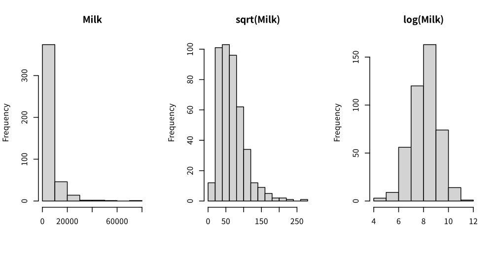
原始資料擠在左邊、拖著長長的右尾；開根號後好一些；取對數後接近對稱的鐘形。
scale(x) 做 z-score 標準化，回傳的是矩陣，用 as.numeric() 轉回向量才好放進資料框。
複製 R c ( mean = mean ( ws2 $ Milk_z ), sd = sd ( ws2 $ Milk_z )) %>% round ( 4 )
## mean sd
## 0 1標準化不會改變分布形狀（還是右偏），只是改變了單位與中心。要改善偏態，要用 log 或 sqrt。
在 ggplot2 用對數座標
不想改資料、只想讓圖好讀，可以改座標軸刻度：
複製 R ggplot ( ws , aes ( x = Milk , y = Grocery )) +
geom_point ( alpha = 0.5 ) +
scale_x_log10 () + scale_y_log10 ()
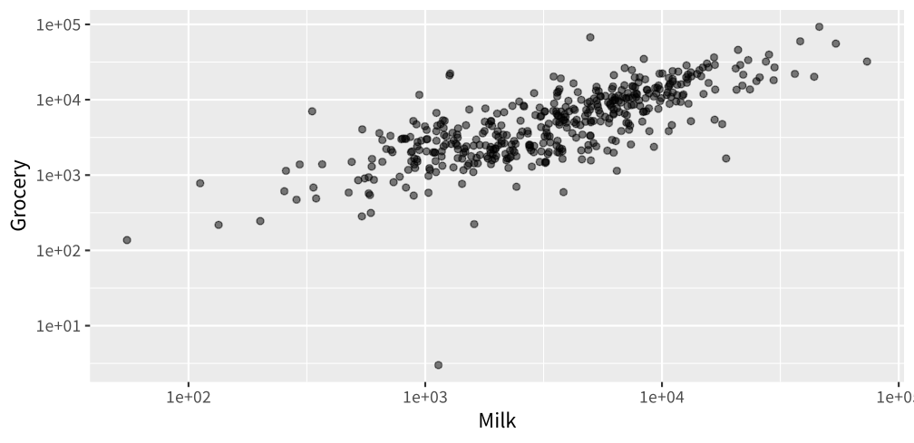
scale_x_log10() 把 x 軸改成對數刻度，軸上顯示的仍是原始數值。
dlookr 套件的 transform()
dlookr 是專門做資料診斷與 EDA 的套件，其中 transform(x, method = ...) 把上面這些轉換包成一個函數，method 可以是 "log"、"log+1"、"sqrt"、"zscore"、"minmax"、"Box-Cox" 等，而且對結果呼叫 summary()、plot() 會直接比較轉換前後的分布：
複製 R # install.packages("dlookr")
library ( dlookr )
milk_log <- transform ( ws $ Milk , method = "log" )
summary ( milk_log ) # 轉換前後的統計量對照
plot ( milk_log ) # 轉換前後的直方圖對照
自己用 log()、sqrt()、scale() 寫，結果是一樣的；dlookr 的好處是一次產生比較用的摘要與圖。
常見錯誤 取 log 之前 log(0) 是 -Inf、負數取 log 是 NaN。資料有 0 時改用 log(x + 1)（或 log1p(x)）；有負數時不能直接取 log。
Concept Check：5.5 資料轉換 題目照期末考的題型自編（選擇、填空、簡答、寫程式），不是老師出的題目。選擇與填空用英文題幹，附中文題意。
Household income in a dataset is strongly right-skewed and all values are positive. Which transformation most directly reduces the skewness?
(A) Standardize it with scale() (B) Take the logarithm with log() (C) Multiply all values by 100 (D) Convert it into a factor 隱藏解答 中文題意
所得資料強烈右偏且全為正值，哪種轉換最能直接改善偏態？
答案 (B) Take the logarithm with log()
解析
取 log 壓縮大值、拉開小值，右偏會變得接近對稱。z-score 標準化和乘上常數都只改變位置與尺度，分布形狀不變；轉成因子就失去數值意義。
A variable visits contains many zeros. What happens with log(visits), and what is a common fix?
(A) Zeros become 0; no fix is needed for the data (B) Zeros become NA; use na.rm = TRUE to fix it (C) Zeros cause an error; use sqrt() instead of log (D) Zeros become -Inf; use log(visits + 1) instead 隱藏解答 中文題意
visits 有很多 0，取 log 會怎樣？常見的處理方式是什麼？
答案 (D) Zeros become -Inf; use log(visits + 1) instead
解析
\(\log(0)=-\infty\)，R 回傳 -Inf（不會出錯，但之後計算平均或畫圖會出問題）。常見做法是 log(x + 1)（log1p(x)），0 會變成 0。sqrt 雖然也能處理 0，但「會出錯」的說法不對。
Using the Wholesale data, create a z-score version and a log version of Grocery. Compare the mean, sd and median of the original and the two transformed variables.
隱藏解答 中文題意
對 Grocery 做 z-score 與 log 轉換，比較原始與兩種轉換的平均、標準差、中位數。
答案 複製 R ws %>%
mutate ( g_z = as.numeric ( scale ( Grocery )), g_log = log ( Grocery )) %>%
summarise ( across ( c ( Grocery , g_z , g_log ),
list ( mean = mean , sd = sd , median = median ))) %>%
pivot_longer ( everything ()) %>%
mutate ( value = round ( value , 3 ))
## # A tibble: 9 × 2
## name value
## <chr> <dbl>
## 1 Grocery_mean 7951.
## 2 Grocery_sd 9503.
## 3 Grocery_median 4756.
## 4 g_z_mean 0
## 5 g_z_sd 1
## 6 g_z_median -0.336
## 7 g_log_mean 8.44
## 8 g_log_sd 1.12
## 9 g_log_median 8.47解析
across() 對好幾欄套用同一組函數；pivot_longer() 把一列很寬的結果轉成直的，方便閱讀。z-score 的平均 0、標準差 1，但中位數是負的（右偏：中位數 < 平均數）；log 之後平均數和中位數接近，表示分布變得較對稱。
5.6 課堂實作：銷售資料的完整 EDA課堂檔用一份銷售資料 salesdata.csv 走一遍完整的 EDA。變數：Store（通路 A／B）、Product（101～106 六種商品）、Client（10 位顧客）、UnitPrice（單價，千元）、Quantity（數量）、Region（國家）。
讀檔與型別轉換
複製 R saledata <- read.csv ( "salesdata.csv" )
str ( saledata )
## 'data.frame': 39 obs. of 6 variables:
## $ Store : chr "A" "A" "A" "B" ...
## $ Product : int 101 102 103 104 101 102 103 104 105 106 ...
## $ Client : int 1 1 1 1 2 2 2 2 2 2 ...
## $ UnitPrice: int 4 5 6 7 4 5 6 7 8 9 ...
## $ Quantity : int 20 4 22 66 44 3 8 4 6 10 ...
## $ Region : chr "Taiwan" "Taiwan" "Taiwan" "Taiwan" ...複製 R saledata $ Product <- as.factor ( saledata $ Product )
saledata $ Client <- as.factor ( saledata $ Client )
Product 和 Client 是代碼，要轉成因子，否則 ggplot 會把它們畫成連續色階、x 軸出現 101.5 這種刻度。
第一張圖：單價與數量
複製 R saledata %>%
ggplot ( aes ( x = UnitPrice , y = Quantity , color = Client )) +
geom_point ( size = 2 )
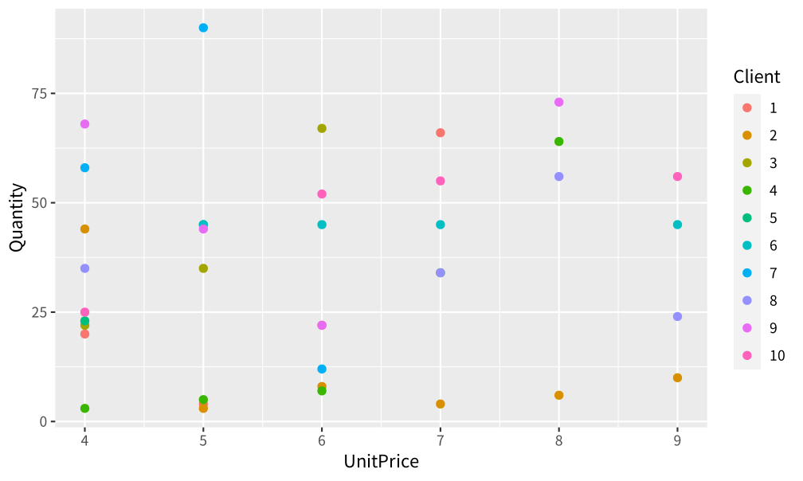
單價越高、購買數量越少，是合理的需求關係。
建立消費金額並看分布
複製 R saledata <- saledata %>% mutate ( Spend = UnitPrice * Quantity )
saledata %>%
ggplot ( aes ( x = Client , y = Spend , fill = Store )) +
geom_boxplot () +
labs ( title = "Plot of Client's expenditure" ,
x = "Client ID" , y = "Total Amount (in thousand)" ) +
theme_classic ()
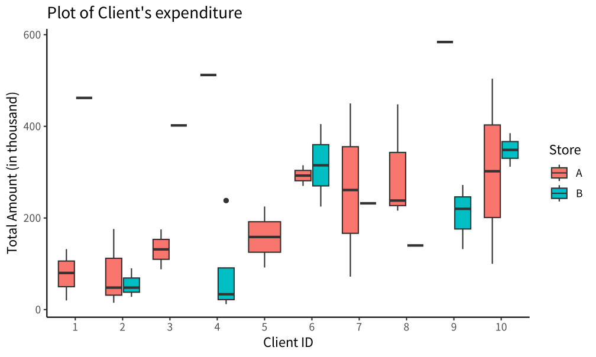
mutate(Spend = UnitPrice * Quantity)：每筆交易的消費金額，後面的分析都以它為主。fill = Store：每位顧客的盒鬚圖再依通路分色，同時看「顧客」與「通路」兩個維度。theme_classic() 套用簡潔的主題；其他常用主題有 theme_minimal()、theme_bw()。
通路筆數：用 vjust 把數字標在長條裡
複製 R ggplot ( saledata , aes ( x = Store )) +
geom_bar () +
geom_text ( stat = "count" , aes ( label = after_stat ( count )),
vjust = 1.5 , color = "white" , size = 6 )
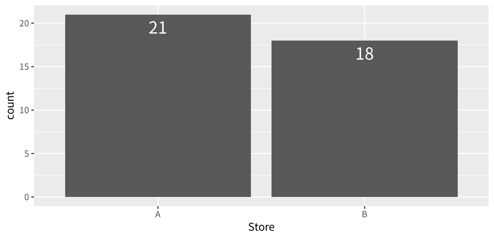
geom_bar() 自己會數每個通路幾筆；geom_text(stat = "count") 用同樣的計數當標籤，after_stat(count) 取出計數結果（老師的課堂檔寫成 ..count..，是舊寫法）。vjust = 1.5 讓數字落在長條頂端內側。
顧客總消費排序
複製 R TotalSales <- saledata %>%
group_by ( Client ) %>%
summarise ( TotalSpend = sum ( Spend )) %>%
arrange ( desc ( TotalSpend ))
TotalSales
## # A tibble: 10 × 2
## Client TotalSpend
## <fct> <int>
## 1 10 1301
## 2 6 1215
## 3 9 1208
## 4 8 1042
## 5 4 829
## 6 7 754
## 7 1 694
## 8 3 665
## 9 2 405
## 10 5 317複製 R TotalSales %>%
ggplot ( aes ( x = Client , y = TotalSpend , fill = Client )) +
geom_bar ( stat = "identity" , show.legend = FALSE ) +
scale_x_discrete ( limits = TotalSales $ Client )
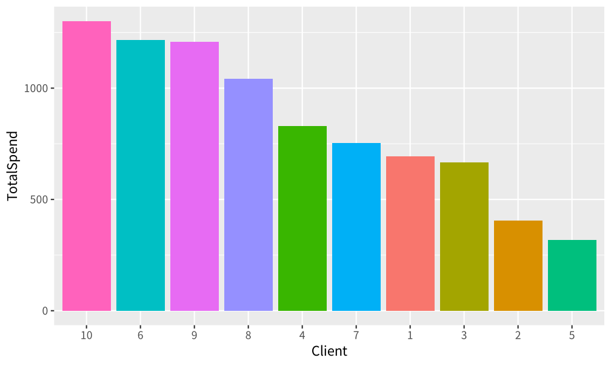
典型的「彙總 → 排序 → 長條圖」。scale_x_discrete(limits = ...) 指定 x 軸類別的順序，長條才會照總消費由高到低排；否則會照因子水準（1、2、…、10）排列。另一種做法是 aes(x = reorder(Client, -TotalSpend), ...)。
各商品總銷量，數字標在長條上
複製 R ProductSale <- saledata %>%
group_by ( Product ) %>%
summarise ( TotalQuan = sum ( Quantity ))
ggplot ( ProductSale , aes ( x = Product , y = TotalQuan )) +
geom_bar ( stat = "identity" ) +
geom_text ( aes ( label = TotalQuan ), vjust = 1.5 , color = "yellow" , size = 5 ) +
labs ( y = "Total Product Sales Quantities" )
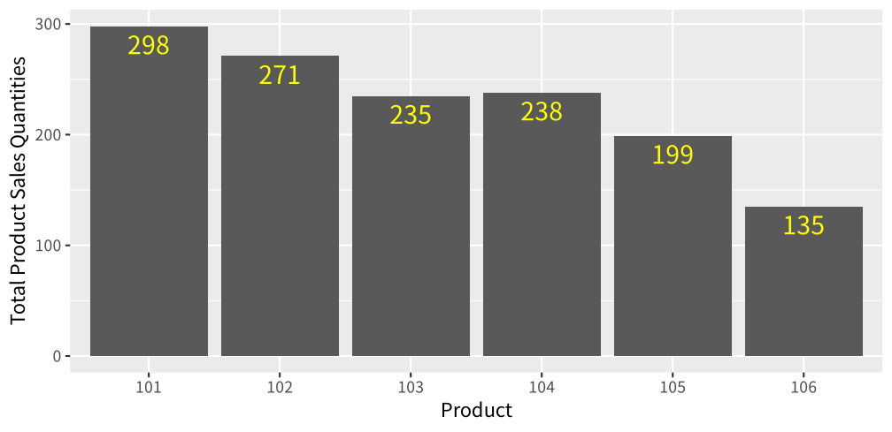
每位顧客買了哪些商品：分面
複製 R ggplot ( saledata ) +
geom_bar ( aes ( x = Product , y = Spend ), stat = "identity" ) +
facet_wrap ( ~ Client )
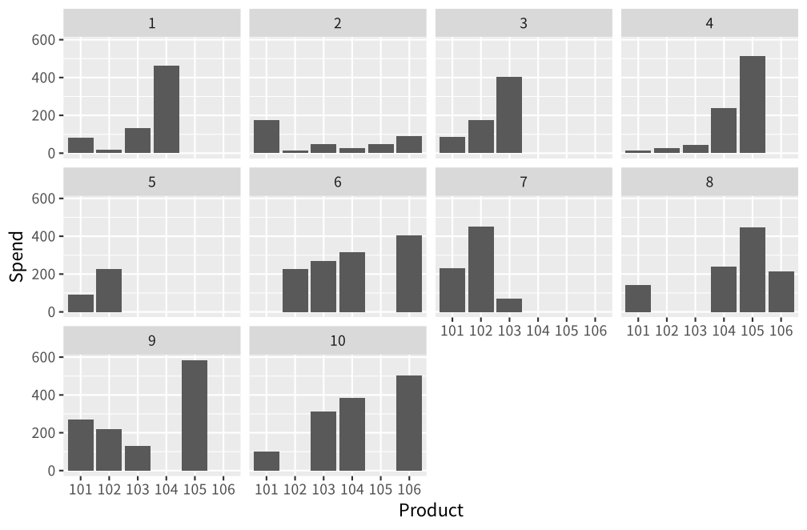
堆疊長條圖加百分比
複製 R Product <- saledata %>%
group_by ( Client , Product ) %>%
summarise ( AmountSpend = sum ( Spend ), .groups = "drop_last" ) %>%
mutate ( Proportion = round ( AmountSpend / sum ( AmountSpend ), 1 ) * 100 )
head ( Product )
## # A tibble: 6 × 4
## # Groups: Client [2]
## Client Product AmountSpend Proportion
## <fct> <fct> <int> <dbl>
## 1 1 101 80 10
## 2 1 102 20 0
## 3 1 103 132 20
## 4 1 104 462 70
## 5 2 101 176 40
## 6 2 102 15 0複製 R ggplot ( Product , aes ( x = Client , y = AmountSpend , fill = Product )) +
geom_bar ( stat = "identity" ) +
geom_text ( aes ( label = paste0 ( Proportion , "%" )),
position = position_stack ( vjust = 0.5 ), color = "white" , size = 3 )
group_by(Client, Product) 後 summarise()，結果仍依 Client 分組（.groups = "drop_last" 是預設行為，寫出來比較清楚），所以接著的 mutate() 中 sum(AmountSpend) 是每位顧客自己的總額 ，算出的是各商品占該顧客消費的比例。position_stack(vjust = 0.5)：標籤跟著堆疊的位置走，放在每一段的中間。這裡的 vjust 指的是「在該段長條內的相對位置」：0 是底、0.5 是中間、1 是頂。round(..., 1) * 100 先四捨五入到小數一位再乘 100，所以比例只會是 10% 的倍數，很小的區段會顯示成 0%。想要整數百分比可改成 round(AmountSpend / sum(AmountSpend) * 100)。這張圖同時回答「誰買最多」與「每個人的消費組成」。
Concept Check：5.6 課堂實作：銷售資料的完整 EDA 題目照期末考的題型自編（選擇、填空、簡答、寫程式），不是老師出的題目。選擇與填空用英文題幹，附中文題意。
TotalSales is already sorted by TotalSpend in descending order, but the bar chart still shows clients in the order 1, 2, ..., 10. Which addition fixes the order of the bars?
(A) + arrange(desc(TotalSpend)) after ggplot(B) + coord_flip(expand = TRUE) to flip the axes(C) + scale_x_discrete(limits = TotalSales$Client)(D) + theme(axis.text.x = element_text(hjust = 1))隱藏解答 中文題意
資料已排序，長條圖仍照 1～10 排列，加上哪一行能修正長條順序？
答案 (C) + scale_x_discrete(limits = TotalSales$Client)
解析
ggplot 依因子水準的順序畫類別軸，和資料列的順序無關。scale_x_discrete(limits = ...) 指定類別順序。arrange() 是 dplyr 函數，不能用 + 接在 ggplot 後面；coord_flip() 只是轉成橫向。
After group_by(Client, Product) %>% summarise(AmountSpend = sum(Spend)), what does mutate(p = AmountSpend / sum(AmountSpend)) compute?
(A) Each product's share of that client's total spending (B) Each product's share of total spending across all clients (C) Each client's share of that product's total sales (D) The same value 1 for every row in the result 隱藏解答 答案 (A) Each product's share of that client's total spending
解析
summarise() 會拿掉最後一層分組（Product），結果仍依 Client 分組，所以 sum(AmountSpend) 是每位顧客的總額，p 是「該商品占這位顧客消費的比例」。若要占全體的比例，要先 ungroup()。
Using saledata, compute the total spending of each Store, draw a bar chart, and put the totals above the bars.
隱藏解答 中文題意
計算每個通路的總消費，畫長條圖，並把總額標在長條上方。
答案 複製 R store_total <- saledata %>%
group_by ( Store ) %>%
summarise ( Total = sum ( Spend ))
ggplot ( store_total , aes ( x = Store , y = Total )) +
geom_col ( fill = "steelblue" ) +
geom_text ( aes ( label = Total ), vjust = -0.5 ) +
expand_limits ( y = max ( store_total $ Total ) * 1.1 )
解析
geom_col() 等於 geom_bar(stat = "identity")。vjust = -0.5 把文字放到長條上方；expand_limits() 把 y 軸上限拉高一點，避免最高那根的數字被切掉。
Read the Wholesale data, convert Channel and Region to factors, draw the correlation plot of the six spending variables, and draw histograms of Milk for each Region using facets.
隱藏解答 中文題意
讀入 Wholesale，Channel、Region 轉因子，畫六個支出變數的相關圖，並用分面畫出各 Region 的 Milk 直方圖。
答案 複製 R data <- read.csv ( "Wholesale customers data.csv" )
data $ Channel <- as.factor ( data $ Channel )
data $ Region <- as.factor ( data $ Region )
corrplot ( cor ( data [, 3 : 8 ]), method = "circle" )
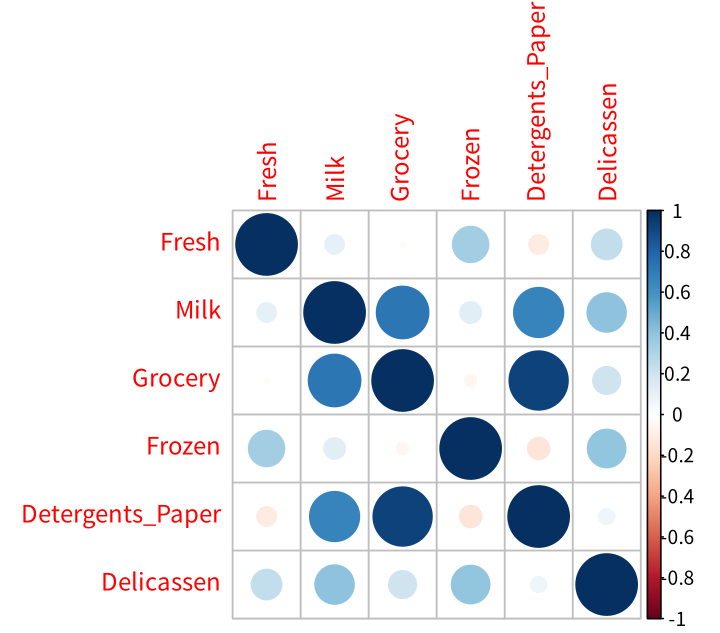
複製 R ggplot ( data , aes ( x = Milk )) +
geom_histogram ( color = "black" , fill = "white" , bins = 30 ) +
facet_grid ( Region ~ . ) +
theme_bw ()
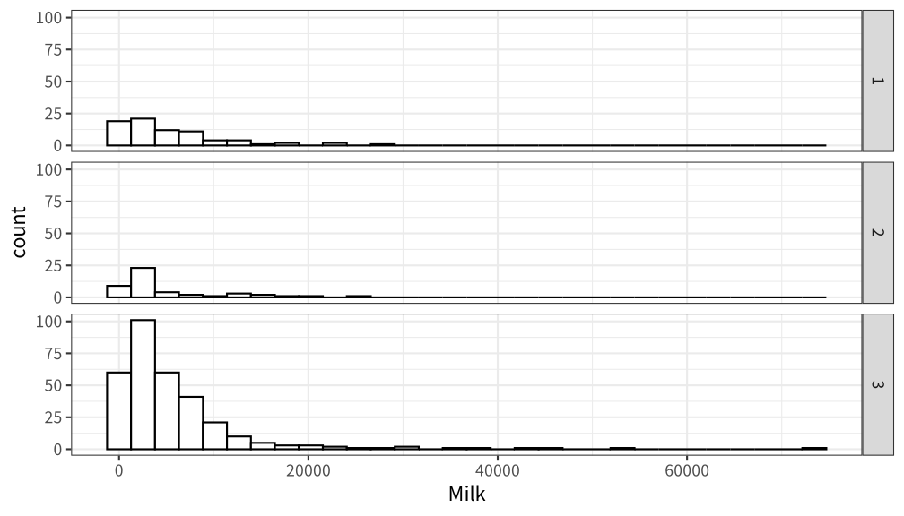
解析
老師的課堂練習。data[, 3:8] 取第 3～8 欄的六個支出變數。facet_grid(Region ~ .)：Region 排成列、點號表示不分欄。相關圖中 Grocery 與 Detergents_Paper 高度正相關，可能是同一類型的商店（零售店）同時大量採購。